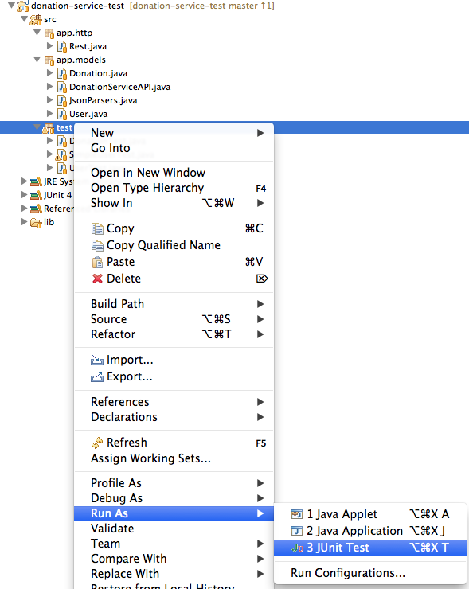
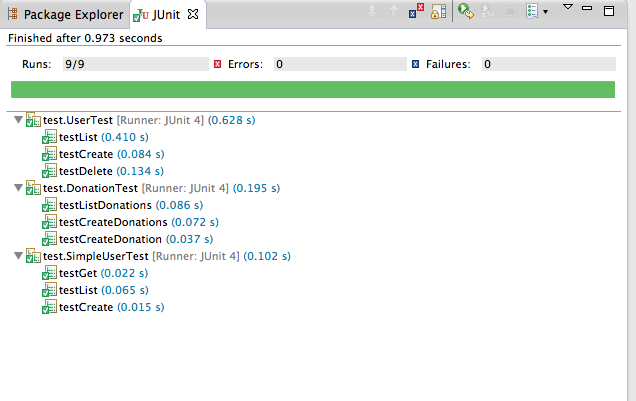

Download this latest version of the donation-service project:
Once expanded, you will need to run
play deps
play eclipsify
Before importing into eclipse and running using
play run
Launch the application.
This version is the same as v5, with one minor change.
Expand and incorporate into workspace.
Note that this version used a deployed donation service by default in Rest.java:
private static DefaultHttpClient httpClient = null;
//private static final String URL = "http://10.0.2.2:9000";
private static final String URL = "http://donation-edel020.edel020.cloudbees.net";
... this should work, but you should probably also use your local version, which will have a different up address to the one commented out above (unless you are using the default android emulator)
This is the test project:
You should be able to download and import this directly into eclipse.
It is also configure to test locally (check this) in its version of Rest.java:
private static DefaultHttpClient httpClient = null;
private static final String URL = "http://localhost:9000";
//private static final String URL = "http://donation-edel020.edel020.cloudbees.net";
To run the tests, open the project in Eclipse, select the 'test' package, right click and select 'Run as->Unit Test'

If the donation-service is running, then these tests should succeed like this:
